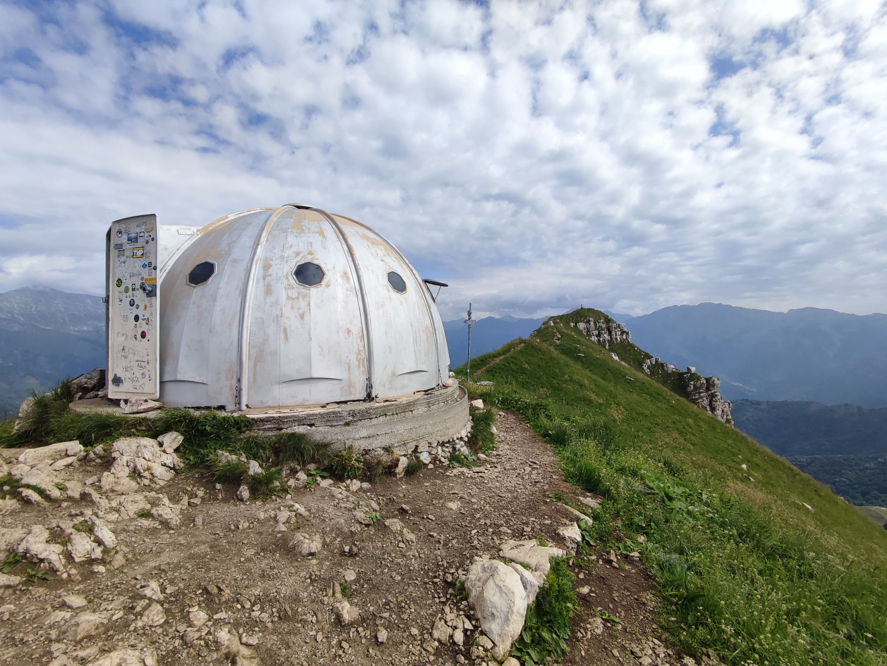
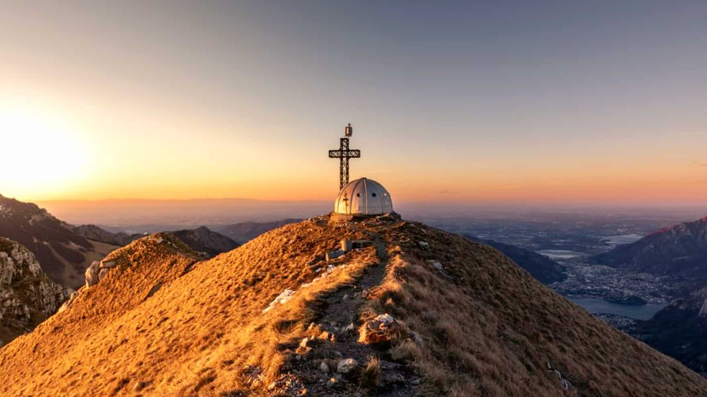

Il Monte Due Mani è una cima delle Prealpi Bergamasche alta 1.666 metri, situata in provincia di Lecco tra la Valsassina, i Piani di Artavaggio e il gruppo del Resegone e delle Grigne. In vetta si trova una croce di metallo e il caratteristico Bivacco Locatelli-Milani-Scaioli, un rifugio d'emergenza dalla forma semisferica (simile a un igloo) aperto per il riparo e il pernottamento con il proprio sacco a pelo. Esattamente come accade per il vicino e celeberrimo Resegone (che ricorda i denti di una sega), l'origine del toponimo è legata alla morfologia della montagna:
• la cresta è composta da dieci piccole cime e pinnacoli frastagliati.
• queste dieci protuberanze rocciose richiamano alla mente la sagoma di dieci dita.
• nel loro insieme, le vette danno l'impressione visiva di due mani aperte rivolte verso il cielo o distese sulla valle.
Si tratta quindi di un nome descrittivo, nato dalla fantasia popolare e dall'osservazione del profilo della montagna da fondovalle.

La splendida vista su Lecco e il lago di Como dalla cima del Monte Due Mani
